Yan Ding1, Xiaohan Zhang1, Saeid Amiri1, Nieqing Cao1, Hao Yang2,
Chad Esselink2, Shiqi Zhang1
1SUNY Binghamton 2Ford Motor Company
[Paper] [Code] [Situation Dataset]
Abstract
Automated task planning algorithms have been developed to help robots complete complex tasks that require multiple actions. Most of those algorithms have been developed for “closed worlds” assuming complete world knowledge is provided. However, the real world is generally open, and the robots frequently encounter unforeseen situations that can potentially break the planner’s completeness.
This work introduces a novel algorithm (COWP) for open-world task planning and situation handling that dynamically augments the robot’s action knowledge with task-oriented common sense. In particular, common sense is extracted from Large Language Models based on the current task at hand and robot skills.
For systematic evaluations, we collected a dataset that includes 561 execution-time situations in a dining domain, where each situation corresponds to a state instance of a robot being potentially unable to complete a task using a solution that normally works. Experimental results show that our approach significantly outperforms competitive baselines from the literature in the success rate of service tasks. Additionally, we have demonstrated COWP using a mobile manipulator.
Framework
| 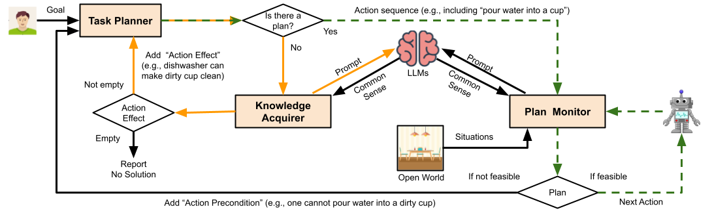 |
An overview of COWP that includes the three key components of Task Planner (provided as prior knowledge under closed-world assumption), Knowledge Acquirer, and Plan Monitor.
-
The green (dashed) loop represents a plan execution process where the robot does encounter no situation, or these situations have no impact on the robot's plan execution.
-
The orange loop is activated when the robot's current (closed-world) task planner is unable to develop a plan, which activates Knowledge Acquirer to augment the task planner with additional action effects utilizing common sense.
Algorithm
| 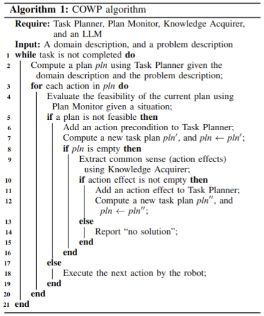 |
Algorithm 1 describes how the components of COWP interact with each other. More details can be found in the paper.
Closed-World Task Planners in PDDL
For each task in the evaluation, we developed a closed-world task planner in PDDL [1]. PDDL, an action-centered language, is designed to formalize Artificial Intelligence (AI) planning problems, allowing for a more direct comparison of planning algorithms and implementations.
The below figure shows a task planner for the task of ``serving water'', which consists of a domain file (upper) and a problem file (lower).
| 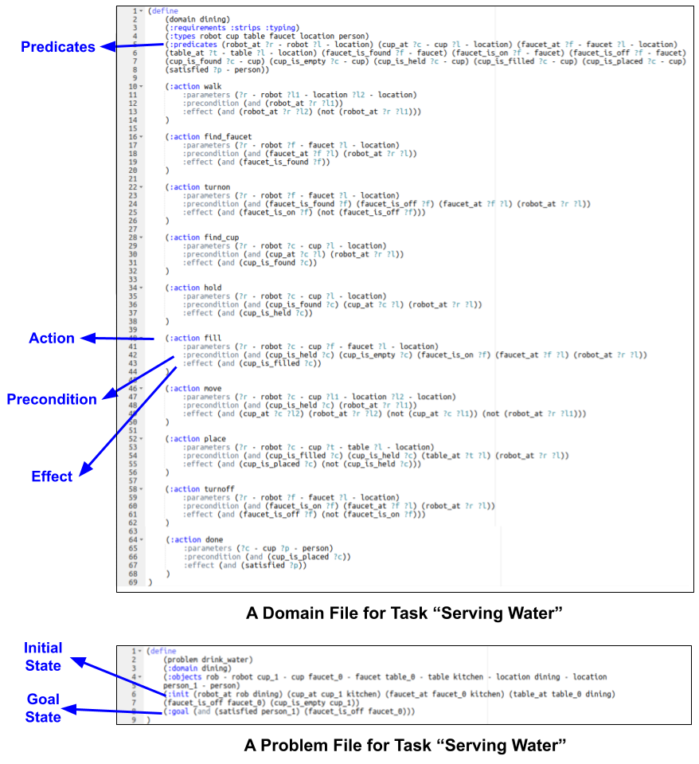 |
In the upper subfigure, a set of predicates (e.g., cup_at) and a set of actions (e.g., fill) are predefined, where an action is defined by its preconditions and effects. For example, one of preconditions for action fill is (cup_is_held ?c) - (cup_is_empty ?c), and the action effect is (cup_is_filled ?c).
In the lower subfigure, a task problem is defined by an initial state and a goal state (i.e., a user is satisfied and the faucet is turned off.) A task plan for drinking water is generated after inputting these two files into a solver, as shown below:
| 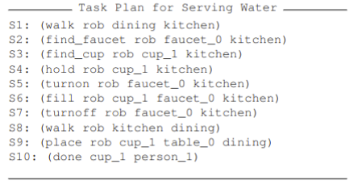 |
The solver is accessible at http://editor.planning.domains/.
Prompt Design
The realization of our plan monitor relies on repeatedly querying GPT-3 for each action using the following prompt.
Template 1: Is it suitable to/that [PERFORM ACTION], if there exists [SITUATION].
The following template is for querying an LLM for acquiring common sense about action effects.
Template 2: Is it suitable to/that [PERFORM ACTION] on/in/with/at/over [OBJECT]?
Template 3: There are some objects, such as [OBJ-1, OBJ-2, ..., and OBJ-N]. Which is the most suitable for [CURRENT TASK]?
The below figure shows three examples for prompt construction based on our Templates 1-3, respectively. In the figure, the interface, called Playground, is intended for testing GPT-3 online, where a user can text a prompt in the blank, and customize the hyperparameters of GPT-3 (e.g., model). In our case, we use the text-davinci-002 model, which is the most capable engine.
The prompt for Plan Monitor (PM) is constructed based on Template 1, where PM evaluates if the current task plan is feasible or not. In the top figure, we can know an action precondition that ``one cannot fill a broken cup with water'' according to the common sense from GPT-3.
The prompts for Knowledge Acquirer (KA) are constructed based on Template 2 and Template 3, where KA extracts common sense to augment the classical task planner. In these two figures (middle and bottom), we can know that common sense that ``one can use a bowl for drinking water'' can be added into an action effect, according to the common sense from GPT-3.
| 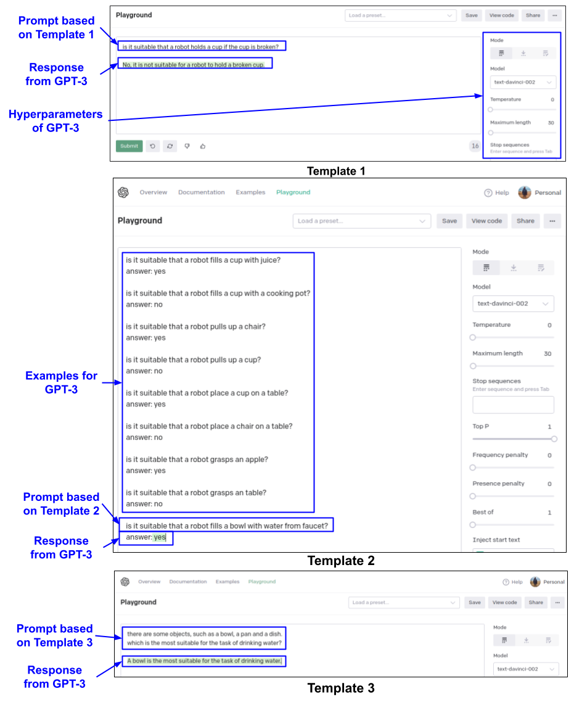 |
The playground of GPT-3 is accessible at https://beta.openai.com/playground.
.Experiment Results
| 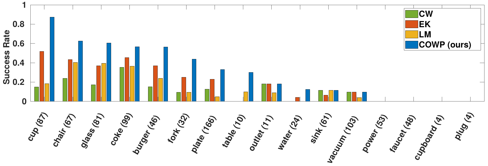 |
| 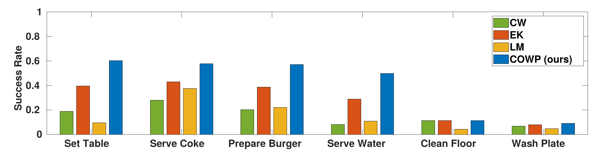 |
Top: Overall performances of COWP (ours) and three baseline methods under six different tasks, where the x-axis represents the task. Each success rate value is an average of 150 trials. The tasks are ranked based on the performance of COWP, where the very left corresponds to its best performance.
Bottom: Overall performances of COWP (ours) and three baseline methods under different objects, where the x-axis represents the object involved in the situation, the number beside each object is the occurrence of the object in our situation dataset, and the y-axis represents the success rate. The objects are ranked based on the performance of COWP, where the very left corresponds to its best performance.
Questionnaire for Collecting Situation Dataset
To collect execution-time situations, a questionnaire was designed and published on Amazon Mechanical Turk. The below figure shows the Mechanical Turk interface for one everyday task (i.e., serving water). In the interface, each MTurker was provided with a task description, including steps for completing the task. The MTurkers were asked to respond to a questionnaire by identifying one step in the provided plan and describing a situation that might occur in that step within the blank.
On the questionnaire, there are six everyday tasks (e.g., setting a dining table) associated with their steps, which were extracted from an existing dataset [2]. In the end, we have collected a dataset of 561 valid situations, where each instance of the dataset corresponds to a situation that prevents a service robot from completing a task in a dining domain. In the next section, we will discuss the statistics of the dataset.
| 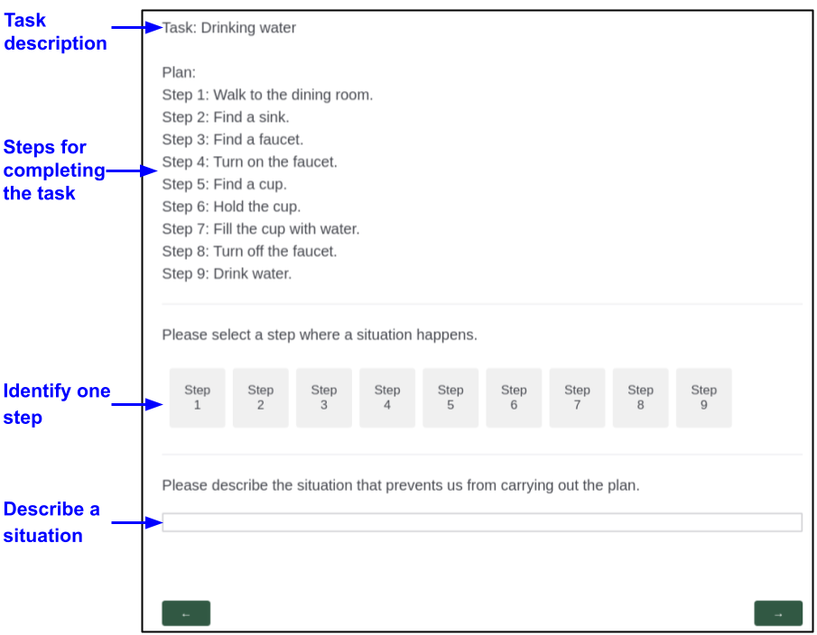 |
Statistics of Situation Dataset
The following two figures show the statistics of situations for six everyday tasks used in our evaluation, where x-axis reflects the occurrence of each distinguishable situations, and y-axis represents each distinguishable situations, respectively. In the top left corner of each subfigure, (X) represents the number of distinguishable situations in each task. In the bottom right corner of each subfigure, Total = X represents the number of situations in each task. According to the two figures, we can see that there are at least 92 situations collected for each of the six tasks used in our evaluation, with 16 to 22 distinguishable situations.
| 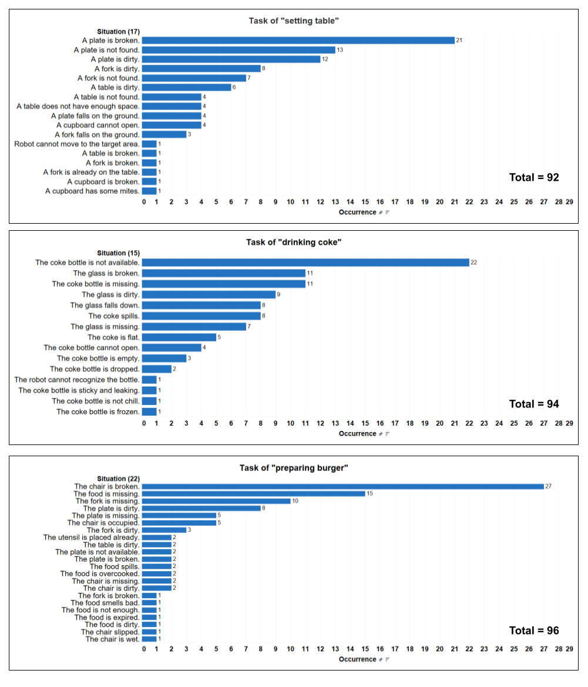 |
| 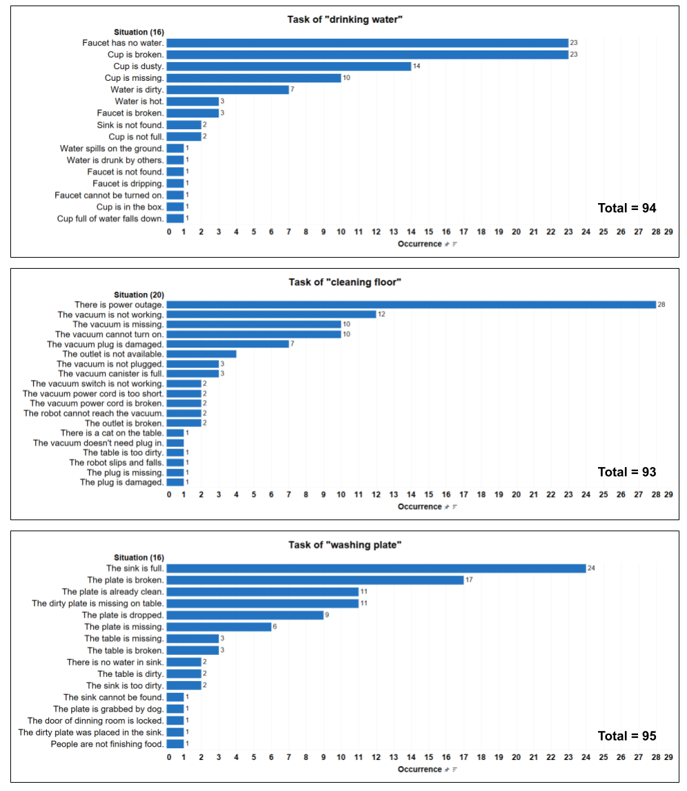 |
Object Library for Simulation
For simulating dining tasks, we extracted 86 objects (e.g., cup, burger, folk, table, and chair) from an existing dataset [2]. Fig. 4 shows these objects, which is categorized into five groups: utensil, appliance, furniture, food, and beverage. From the figure, we can see that the category “utensil” contains the greatest number of objects (i.e., 29), while the category “beverage” contains the fewest ones (i.e., 8).
| 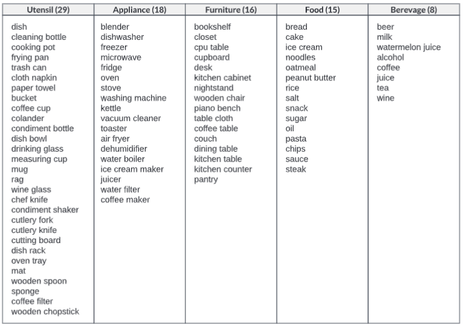 |
Reference
[1] C. Aeronautiques, A. Howe, C. Knoblock, I. D. McDermott, A. Ram, M. Veloso, D. Weld, D. W.SRI, A. Barrett, D. Christianson et al., “Pddl— the planning domain definition language,” Technical Report, Tech. Rep., 1998
[2] W. Huang, P. Abbeel, D. Pathak, and I. Mordatch, “Language models as zero-shot planners: Extracting actionable knowledge for embodied agents,” Thirty-ninth International Conference on Machine Learning, 2022